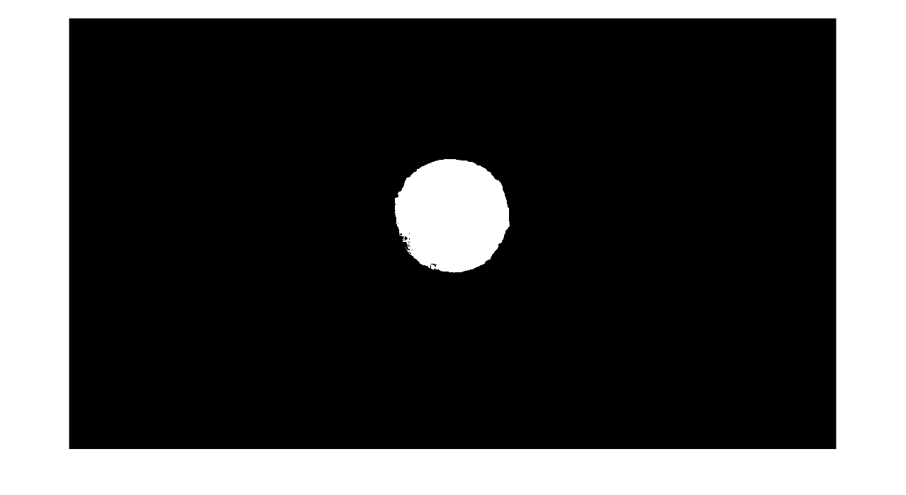
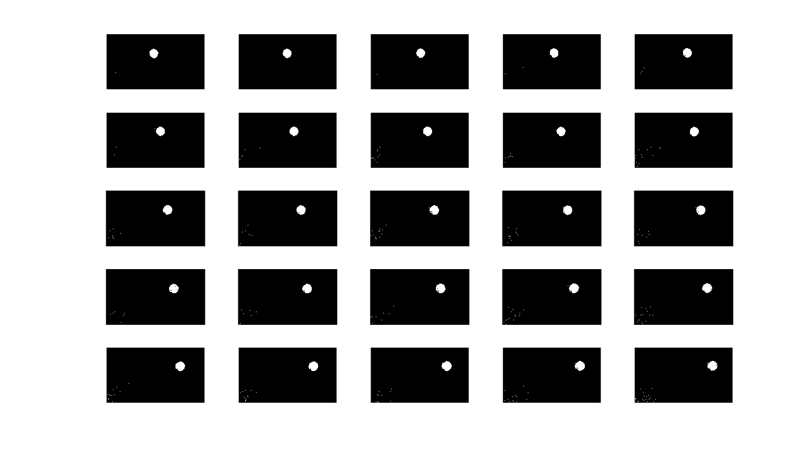
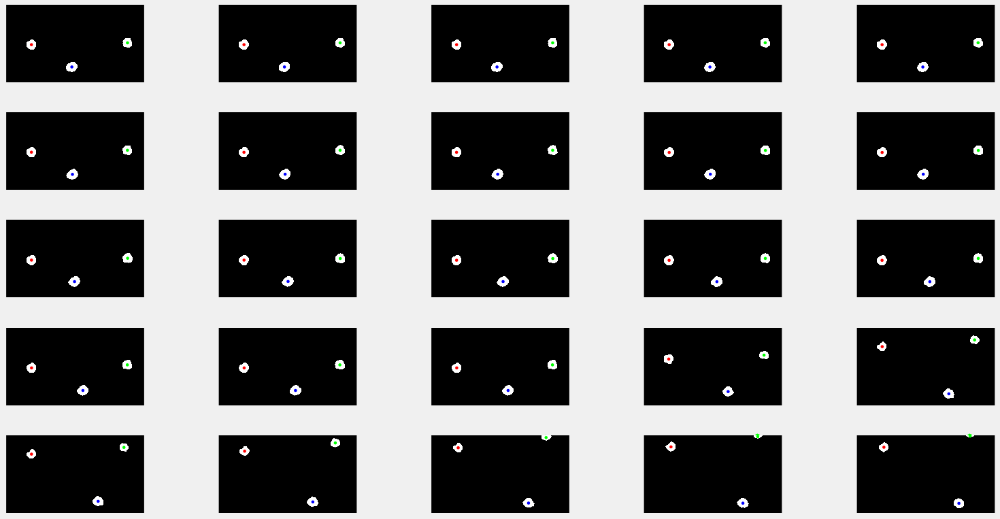

Chris Cronin, Andrew Gardner
Fall 2015 ECE 5554/4984 Computer Vision: Class Project
Virginia Tech
Abstract
Gesture control is an interesting feature that has been tested in many modern applications. The motivation behind our project was to accomplish the first step of gesture control and be able to track objects through a video. To simplify the task we tracked bright yellow balls through a video using the LAB colorspace. We then used the average of the positions of the pixels identified to obtain the center of each individual ball and used proximity to ensure the same center stayed with the same ball from frame to frame. We developed a system in MATLAB that was capable of taking a video file, parsing it into frames, identify the centers of the balls, and track those centers throughout. There are some slight issues where if a ball is initially in the video then leaves and re-enters it will not be tracked and the centers will get mixed up.
Teaser Figure
 Balls used as markers shown with the centers identified
Balls used as markers shown with the centers identified
Introduction
Something seen in many sci-fi films is the use of computers through gesture control. The first step to be able to move towards this feature is the ability to track the object being used to make the gesture. For our project we solve a simplified problem and track the centers of yellow balls through a video. In order to do this we do some computations on each individual frame of the video which we get by splitting the video into frames within MATLAB. We also use the the LAB colorspace instead of the RGB colorspace since the balls we use are significantly brighter than the rest of the content in each frame. This is highly dependent on the lighting of the setting the motion tracking is occurring in so our system does assume that the lighting will remain the same throughout the video and does require to some initial user input in order to get the appropriate bounds so only the balls will be identified their brightness. With the successful tracking of the markers the data gathered from our system could be used to implement some sort of gesture control system based on the path of the markers through the video.
Approach
Our pipleline for tracking the markers in our video is composed of 5 steps: Convert the color space, create a binary image, perform noise reduction, label the blobs, and calculate the blob centers.
The first step is to convert from the RGB color space to the LAB color space, and was accomplished with Matlab's rgb2lab function. We initially only worked with a single image the markers and experimented with different color spaces and channels until we were able to threshold out a relatively clean binary image.
The next step is to threshold the frames in LAB color space into a binary image. Because the markers are bright yellow, they are much brighter than the rest of the frame. Consequently, we chose to threshold the image on the brightness channel of the color space to separate out the markers. We initially found a good threshold brightness value that would clearly separate out the balls in our test images, but when we applied this threshold to all the frames of a video we quickly realized that the lighting varied from video to video which caused issues with the fixed threshold value. We decided the best solution would be to manually select a threshold for each video. To do this we used a threshold selection tool that was written by Robert Bemis and published on the Matlab file exchange. When our pipeline is run, the user is prompted to select a threshold manually for the first frame of the video. This threshold is then used when processing the remaining frames.
Next we had to remove noise from the binary image. Despite the manual threshold selection we were still getting some erroneous pixels in the foreground. To resolve this we used morphological operations. We perform one pass of erosion to remove any stray pixels that don't belong to blob, and then do two passes of dilation to fill in and round out the blobs that correspond to the markers.
Once we had a clean binary image, we used Matlabs built in bwlabel function to label each of the blobs in the frame. This function returned a matrix the same size as the image, with each pixel that corresponded to a separate blob labeled with a number.
Once we had each blob labeled, we calculated the center of each. To do this, we simply take the average of the x and y coordinates of all the pixels in a blob, and assign the average values as the center. When creating the list of centers for each blob, we initially did not look at the proximity of the current centers to the previous centers, and just relied on the labels to identify which blob the center belonged to. However, we quickly realized there was no guarantee of each blob receiving the same label in each frame. As a result, we could not use the labels to determine which center went with which blob. We solved this problem by using a nearest neighbor approach, in which we computed the distance between each center in the previous frame and the current frame, and then matched the current centers with the closest previous centers.
Once we had the list of centers we then produced an animated plot that displayed each frame with the center marked on each ball.
Experiments and results
The first experiment we conducted was determining the best method to isolate the markers from the rest of the image. To do this we used a single image with one of the markers and tried converting it to a LAB image then to a binary image based on a threshold that would give us a blob with only the marker and we were able to get these results with the single image when selecting an appropriate threshold: 
This seemed fine, but when applying this method to the frames of a video there was some noise as shown in the binary images of some of the frames of a test video here: 
After seeing the noise in these images we realized we would need to erode and then dilate the binary images in order to make the blobs more uniform and to remove noise from the images. After applying the MATLAB imerode once and imdilate twice we ended up with the following results which were much better than our initial binary images:
The second experiment we performed was on how the speed at which the markers were moved affected the performance of the system. The system did not have any trouble handling the markers moving at slower speeds, but when the speed of the markers was increased the system began switching which center went with which marker. We believe this was because the frame rate was low enough that when the first marker moved out of a position the second marker moved enough to be in that position so it looked to the system like the first marker had not moved at all. This can be seen happening at 0:08 in the video linked below and we would recommend using the feature Youtube has to view it at a slower speed as to allow for better observation:
2 ball speed test
Qualitative results

Output of the system
As seen in the video linked above we were able to successfully track markers in a video and keep track of their individual centers. The only failure cases that we came across were if there was a heavy lighting difference in part of the video, a shadow falls across it, or if the speed at which the markers are moved is greatly increased. If this project was to progress further it may be possible to implement some sort of checking for dramatic changes in the overall colorspace and allow the user to reset the threshold to a different point when that change occurs to keep changes in lighting from affecting the performance of the system.